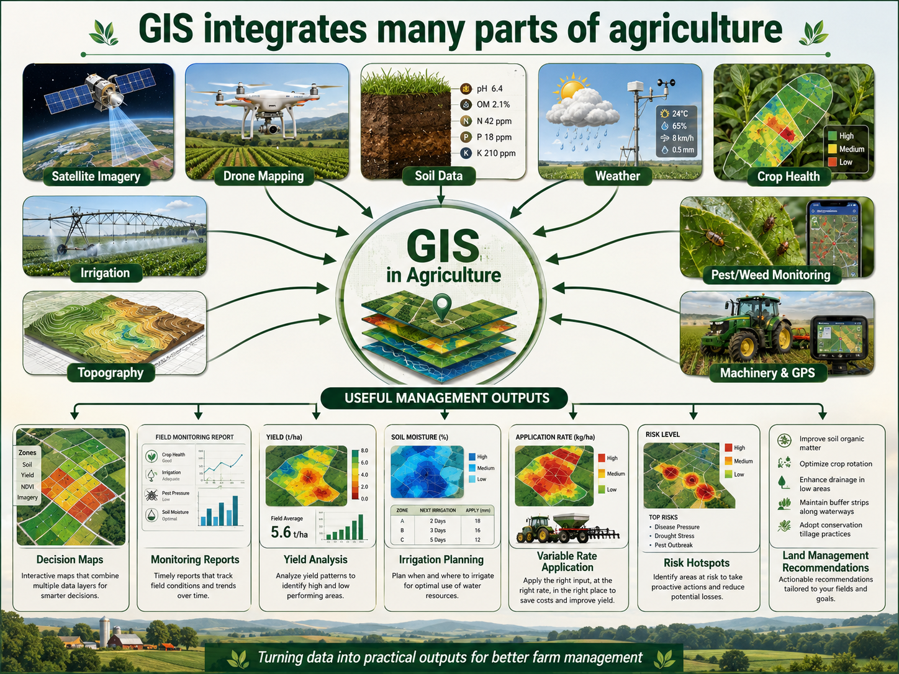
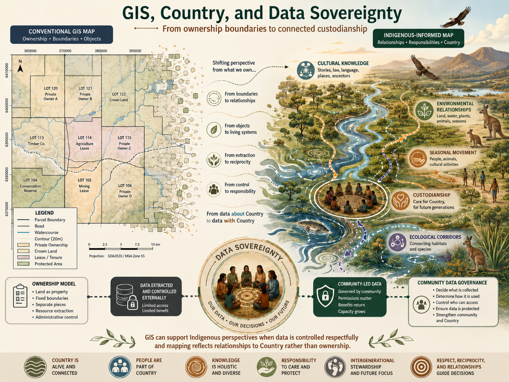

Vegetation Condition
Drone and satellite imagery can help identify vegetation patterns, sparse cover, stressed areas and seasonal change across a property or site.
Agriculture, Mapping, Culture and Practical Decision Support
Land management is an important part of the AerisAg business concept. AerisAg combines practical agricultural knowledge with GIS mapping, drone imagery and satellite data to support better decision-making for landholders, councils, rural businesses and environmental managers.
Mapping outputs are most useful when they can be interpreted in a real land management context. Understanding vegetation, weeds, drainage, soil condition, seasonal change and farm operations helps AerisAg provide information that is practical rather than purely technical.

Drone and satellite imagery can help identify vegetation patterns, sparse cover, stressed areas and seasonal change across a property or site.
GIS mapping can support weed monitoring by identifying possible weed areas, recording treatment zones and comparing change over time.
Imagery can help identify drainage patterns, waterlogging, bare ground and areas that may require further field inspection.
AerisAg can provide paddock maps, treatment zones, access routes and spatial records that support future work by the landholder.
AerisAg recognises that land can hold cultural, historical and community meaning. Mapping work should respect Country, cultural knowledge, privacy and data sovereignty.
AerisAg aims to guide customers using factual evidence from mapping, imagery and spatial analysis. This means land management decisions are supported by maps, statistics, imagery comparisons and site information rather than visual impressions alone.
Evidence-based land management can assist with prioritising work, identifying problem areas, monitoring change over time and comparing the effectiveness of different management actions.
Deliverables may include labelled maps, PDF reports, paddock maps, vegetation condition summaries, treatment zone maps, spatial files, image comparisons, tables and recommendations based on the available evidence.
Land management is not only a technical process. AerisAg recognises that land can have cultural, historical and community significance, particularly for Aboriginal and Torres Strait Islander peoples and their connection to Country. Mapping, drone imagery and spatial data should be handled with respect, awareness and sensitivity.
AerisAg acknowledges that different communities may have different expectations about how land information is collected, stored, shared and used. This includes awareness of data sovereignty, where communities and landholders should have a say in how information about their land, places and cultural values is managed.
This means AerisAg would aim to communicate clearly with clients and communities before collecting or using spatial data. Sensitive areas, cultural values, privacy concerns and permissions should be considered as part of the mapping workflow. Cultural differences are accepted and acknowledged so that mapping outputs are respectful as well as technically useful.

Land management connects directly with the other AerisAg skill areas. Drones can capture detailed imagery, satellite data can show broader patterns, and GIS can organise and analyse the spatial information. Land management knowledge helps interpret what those patterns may mean in practice.
This combination allows AerisAg to provide a more complete service. Instead of treating drone imagery, GIS and agriculture as separate tasks, the business concept brings them together into one workflow that supports practical decisions.